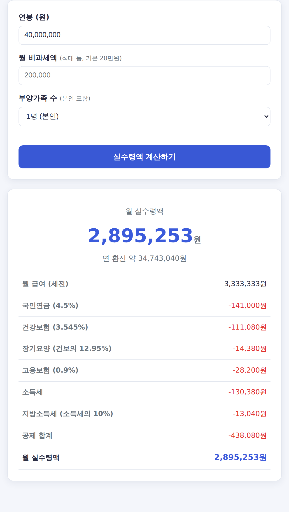

연봉 1억·1억2천·2억 실수령액 총정리 (고연봉 세후 월급)
연봉 1억을 넘기면 세금과 4대보험 공제가 크게 늘어 "세전과 세후 차이"가 상당합니다. 고연봉 구간의 월·연 실수령액을 표로 정리했습니다.
⏱️ 내 연봉을 바로 넣어보려면? 연봉 실수령액 계산기에서 1초 만에 확인하세요.

고연봉 실수령액 표 (2026년 기준)
비과세 월 20만원, 부양가족 1인 기준입니다.
| 연봉 | 월 실수령액 | 연 실수령액 |
|---|---|---|
| 8,000만원 | 약 534만원 | 약 6,414만원 |
| 1억원 | 약 651만원 | 약 7,814만원 |
| 1억 2,000만원 | 약 757만원 | 약 9,083만원 |
| 1억 5,000만원 | 약 900만원 | 약 1억 804만원 |
| 2억원 | 약 1,132만원 | 약 1억 3,587만원 |
고연봉일수록 공제가 커지는 이유
- 누진 소득세 — 과세표준이 높을수록 세율이 올라갑니다(최고 45%). 연봉이 오를수록 세금 비중이 커집니다.
- 국민연금 상한 — 국민연금은 기준소득월액 상한(약 617만원)이 있어 일정 이상은 더 늘지 않습니다.
- 건강보험 — 상한이 매우 높아 고연봉일수록 절대 금액이 큽니다.
자주 묻는 질문
Q. 연봉 1억이면 실수령도 그만큼 많나요?
연봉 1억의 월 실수령액은 약 651만원으로, 세전 월급(약 833만원) 대비 약 22%가 공제됩니다. 연봉이 높을수록 공제 비율이 커진다는 점을 감안해야 합니다.
📌 함께 보기 — 연봉 실수령액 표 총정리 (2400만~1억)